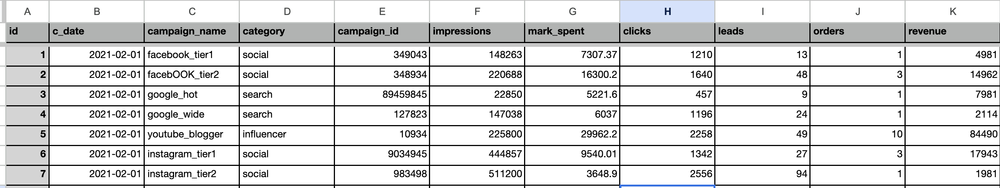
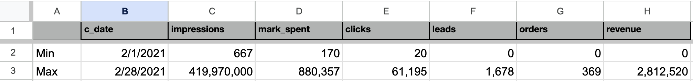
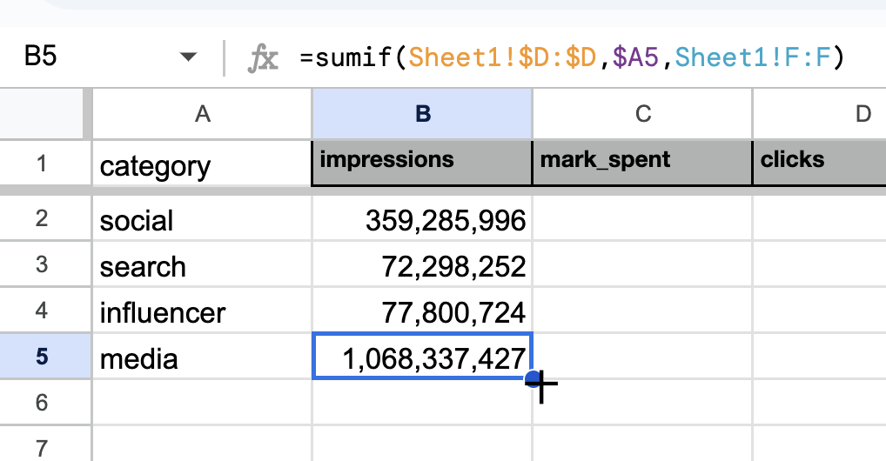
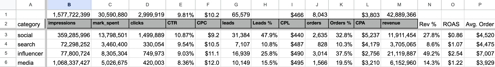
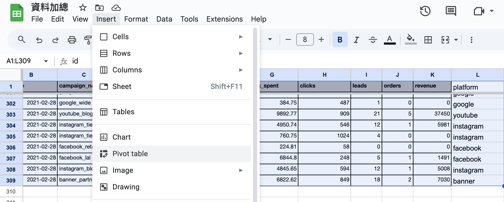
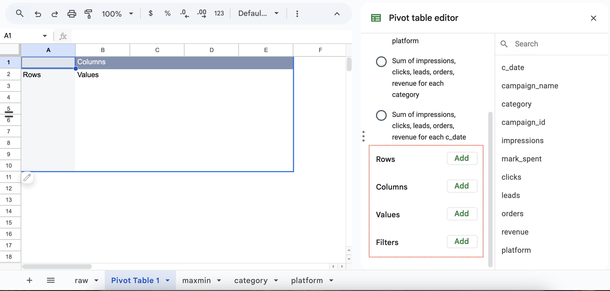
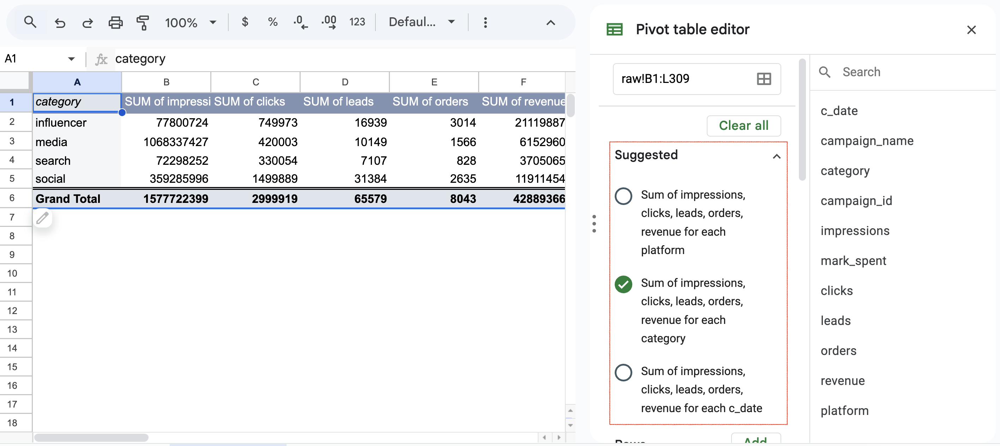
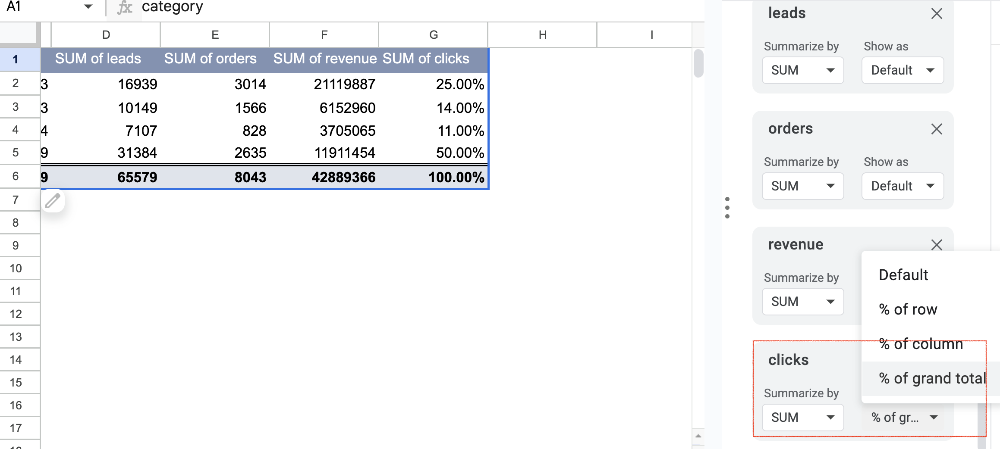
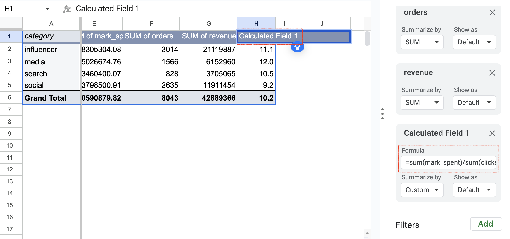

Part 1 – Exploratory Analysis & KPI Overview
Introduces key workflows and tools in Google Sheets / Excel to explore marketing data using formulas and pivot tables.
拿到資料的第一件事是先進行初步了解: 區間、範圍、趨勢，等等
常用的方法有:
- 函式
- max, min
- sum, sumif
- count, countif
- find
- left, mid, right
- unique
- lower
- 樞紐分析表
這個系列會使用從 kaggle 下載的 Digital Marketing Metrics & KPIs to Measure (SQL)
Kaggle是一個有很多Machine Learning資源的平台，除了資料集之外，也有寫好的models可以參考
本系列用的函式，在Excel和Google Sheet都可以使用，使用方法也剛好相同
下載檔解壓縮之後把資料貼到Google Sheet
Min, Max
首先用min和max 函式，查看數值型資料的最大跟最小值
包括impressions、spent、clicks、leads、orders、revenue。也可以用來查看日期範圍
複製表頭到新分頁，第2、3列分別表示最小值和最大值
日期的最小值 (B2) 公式輸入 =min(Sheet1!B:B)，找Sheet1 B欄的最小值
日期的最大值(B3) 把min換成max即可 =MAX(Sheet1!B:B)
顯示格式: date的格式是Date，可從Format → Number → Date選擇，其他的用一般數字呈現，加上逗號比較方便看
可以看出內容是2021年2月份的行銷成效，落差蠻大的，有可能是不同類型廣告活動的關係
Sumif, Countif
從campaign_name和category進一步探索資料集，不過…在那之前需要加工一下
觀察campaign_name可以發現，廣告活動名稱包含了平台名稱 - facebook、instagram、google、youtube、等
campaign_name的結構: 底線左右兩邊分別是平台和自訂的廣告活動類型
我們可以用find找到底線後，用left取底線左邊的平台名稱
在原始資料的右邊欄位: L欄，輸入 =left(C2,find("_",C2)-1)
為了統一平台名稱格式，可包在lowe函式內都換成小寫 =lower(left(C2,find("_",C2)-1))
接下來就可以依據category和platform加總數值
先從category開始，在新分頁 Sheet3 A1 輸入 =UNIQUE(Sheet1!D:D) 取得清單
用sumif加總，例如 B2: =sumif(Sheet1!$D:$D,$A2,Sheet1!F:F)
拖曳複製公式的時候注意使用 $ 符號固定欄/列
完成所有加總後，即可往右複製取得完整數據
接著可以開始進行指標計算：
- CTR = clicks / impressions
- CPC = spent / clicks
- CPL = spent / leads
- CPA = spent / orders
- ROAS = revenue / spent
- Average order price
也可計算 clicks, leads, orders, revenue 的占比
觀察資料：
- social 和 media 占 90% 的曝光
- 主要leads來自 social 和 influencer
- influencer ROAS 最高 ($2.54)
- 可以考慮增加 influencer 預算投入
這個結果和一般行銷表現的觀察蠻一致的: display/media廣告帶來曝光，其他渠道帶來轉換
正想對platform和campaign做相同分析，但發現缺少對應的category
這部分會在下一篇資料參照中說明
建議給四個分頁命名如: raw、maxmin、category、platform，比較一目瞭然
目前為止的分析也可用樞紐分析表（Pivot Table）達成
樞紐分析表 Pivot Table
回到原始資料工作表，選取全部範圍，點選 Insert → Pivot Table
使用右側編輯器進行設計
 以clicks占比為例，新增clicks欄位，再選擇 Show as: % of grand total
新增自訂欄位計算 CPC = spent / clicks
樞紐表一開始建置花時間，但之後就可以快速切換維度（如category、platform、date）